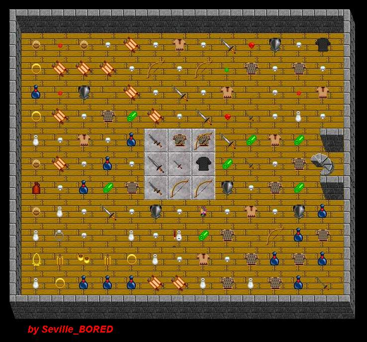

| Warped Papa! | |||||||||
 |
|||||||||
| Each of the 4 hexes that do not contain items is a Warp Hex. You cannot stand in that hex and if you try to do that, it will move you to another hex depending on which way you were heading into the Warp Hex. Papa should clean up his room more often. Tsk Tsk Tsk. | |||||||||
| Back to Papa Lich Lair. | |||||||||